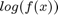
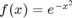
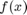
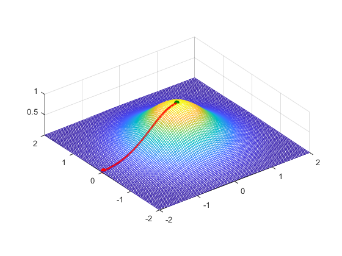
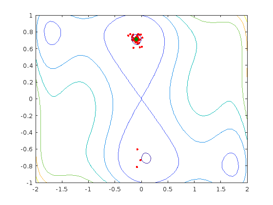

Optimization exercises
Contents
Exercise 1
Using a hill-climbing optimization algorithm, find the maximum of  where . Compare to the maximum of .
clear, close all objective = @(x) (-x.^2); step_size = 0.04; current_point = 1.50; current_z = objective(current_point); n_steps = 150; for s = 1:n_steps new_point = current_point + step_size; new_z = objective(new_point); if new_z >= current_z current_point = new_point; current_z = new_z; else step_size = -step_size * 2/3; end end disp(current_point)
-2.4577e-15
Exercise 2
Using a hill-climbing optimization algorithm, find the maximum of  .
.
rng(9) clear, %close all xax = linspace(-2, 2, 101); yax = linspace(-2, 2, 101); [xplane, yplane] = meshgrid(xax, yax); objective = @(x,y) exp(-x.^2-y.^2); zvalue = objective(xplane, yplane); h = mesh(xplane, yplane, zvalue); axis equal objective = @(x,y) exp(-x.^2-y.^2); step_x = 0.025; step_y = 0.025; current_x = 4 * rand - 2; current_y = 4 * rand - 2; current_z = objective(current_x, current_y); line(current_x, current_y, current_z, 'marker', 'o', 'color', 'r', 'markerf', 'r') while true % The candidate new_x = current_x + step_x; % The evaluation new_z = objective(new_x, current_y); % The accept/reject if new_z >= current_z current_x = new_x; current_z = new_z; else step_x = -step_x * 2/3; end % The candidate new_y = current_y + step_y; % The evaluation new_z = objective(current_x, new_y); % The accept/reject if new_z >= current_z current_y = new_y; current_z = new_z; else step_y = -step_y * 2/3; end % The stopping rule if current_z > .9999 line(current_x, current_y, 1, 'marker', 'o', 'color', [0 .5 0], 'markerf', [0 .5 0]) drawnow break end line(current_x, current_y, current_z, 'marker', '.', 'color','r') drawnow end disp([current_x current_y])
-0.0085 -0.0000
Exercise 3
Using some of the functions surf, mesh, contour, and plot3, graph the so-called six-hump camelback function  :
:  . Then use simulated annealing to find its global minimum.
. Then use simulated annealing to find its global minimum.
% rng(9) clear, clf xax = linspace(-2, 2, 101); yax = linspace(-1, 1, 101); [xplane, yplane] = meshgrid(xax, yax); objective = @(x,y) (4 - 2.1*x.^2 + x.^4/3).*x.^2 + x.*y + 4*(-1 + y.^2).*y.^2; zvalue = objective(xplane, yplane); h = contour(xplane, yplane, zvalue); T = .1; counter = 0; current_x = 4 * rand - 2; current_y = 2 * rand - 1; current_z = objective(current_x, current_y); h = line(current_x, current_y, current_z, 'marker', 'o', 'color', 'r', 'markerf', 'r'); j = line(current_x, current_y, current_z, 'marker', '.', 'color', 'k'); while T > .001 % The candidate new_x = min(max(current_x + randn*T*10,-2),2); new_y = min(max(current_y + randn*T*10,-1),1); % The evaluation new_z = objective(new_x, new_y); set(j, 'XData', new_x, 'YData', new_y, 'ZData', new_z) % The accept/reject if new_z <= current_z || rand < exp(-(new_z-current_z)/T) current_x = new_x; current_y = new_y; current_z = new_z; set(h, 'XData',current_x, 'YData', current_y, 'ZData', current_z) end counter = counter + 1; if counter > 100 counter = 0; T = T * .5; % Cool down disp([T current_x current_y current_z]) end % The stopping rule if current_z < -2 || T < .001 line(current_x, current_y, 1, 'marker', 'o', 'color', [0 .5 0], 'markerf', [0 .5 0]) drawnow break end line(current_x, current_y, current_z, 'marker', '.', 'color','r') drawnow end disp([current_x current_y current_z])
0.0500 -0.1051 0.7094 -1.0306
0.0250 -0.1051 0.7094 -1.0306
0.0125 -0.0761 0.6544 -1.0061
0.0063 -0.0808 0.6915 -1.0279
0.0031 -0.0783 0.7134 -1.0311
0.0016 -0.1033 0.6946 -1.0281
0.0008 -0.0960 0.7126 -1.0315
-0.0960 0.7126 -1.0315
 Exercise 4
Read the documentation for MATLAB's fminsearch function. Use it to solve Exercise 2 and 3 again.
objective1 = @(x) -exp(-sum(x.^2)); [x, fval] = fminsearch(objective1,[0 1.5]) objective2 = @(x) (4 - 2.1*x(1).^2 + x(1).^4/3).*x(1).^2 + x(1).*x(2) + 4*(-1 + x(2).^2).*x(2).^2; [x, fval] = fminsearch(objective2,[0 1.5])
x = 1.0e-04 * -0.2204 0.0399 fval = -1.0000 x = -0.0899 0.7127 fval = -1.0316